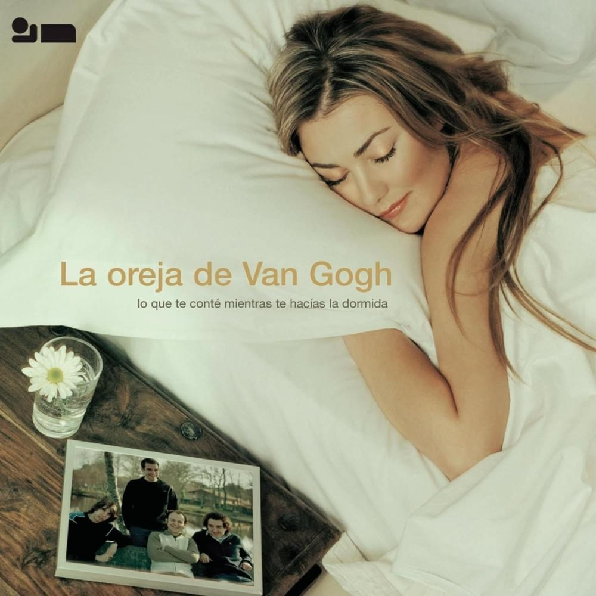
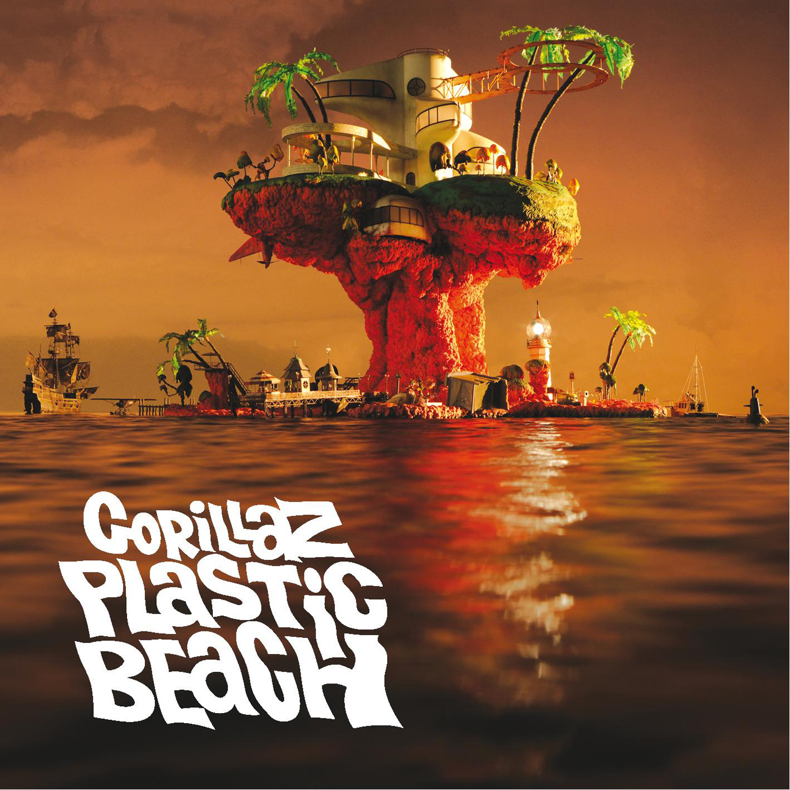
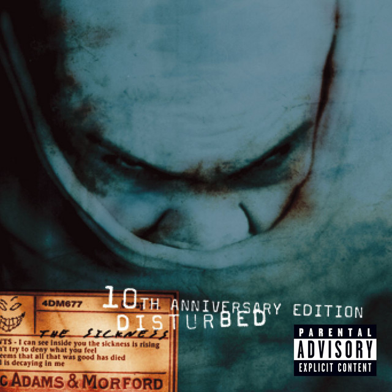

Sección para quienes tengan acceso a este repositorio recomienden 1 o 2 canciones de su gusto, el formato de como va cada recomendacion estará en las notas de HTML
No hay descripcion que pueda expresar lo que es esta canción, simplemente es un Temazo, la parte de Dani es epica
Una canción triste y emotiva que da una sensación de desolación ;(
Sin duda una canción melancólica que invita a hacer una reflexión profunda sobre nuestros sentimientos.
Este album (After hours) es una obra de arte, pero lo que transmite esta canción es simplemente bello, no hay ninguna otra que se lee compare.

Es una canción buena si te gusta el metal, y me da risa el grito que hacen al principio jajaja
Probablemente la mejor cancion del album "Desde el fin del mundo"